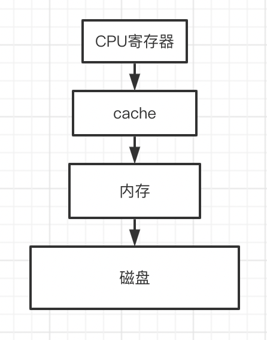
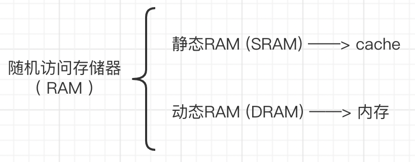
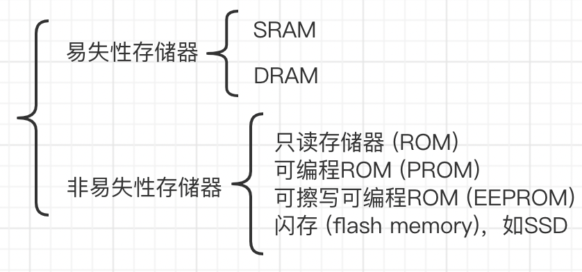
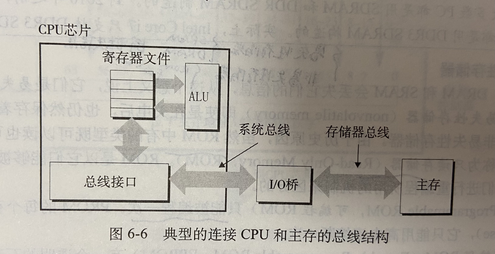
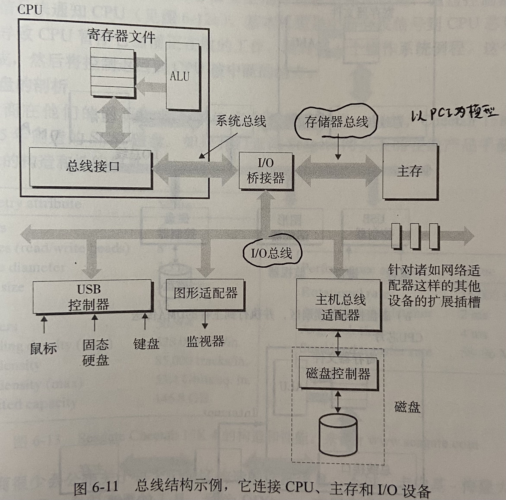
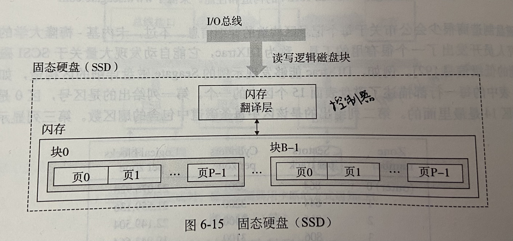

计算机存储基础
1、存储器的层次结构
整个计算机的存储系统本质上是严格的层次结构，自上而下容量越大、速度越慢、价格越低。由于程序的局部性访问原理，层次结构是必然的一种设计。在这种结构中，上层可以作为下层的缓存，这样，在读取数据时，可以尽量通过读上层中缓存的数据来减少直接读取下层存储器带来的时间开销。下图是一个粒度较粗的划分，cache又可以分为L1、L2和L3 cache，除了本地磁盘外，还会有一些远程存储设备，比如分布式文件系统和Web服务器等。
2、存储器分类
2.1 RAM
SRAM比DRAM更快、更贵、更小，通常用于作cache，而DRAM通常用于作内存等。
DRAM包括多种，从传统的，到增强型的，具体有FPM DRAM，EDO DRAM，SDRAM，DDR SDRAM（e.g., DDR3）。
2.2 易失性存储器
SRAM和DRAM断电均会丢失信息，属于易失性存储器。而非易失性存储是指断电仍会保存信息的存储器，如上图中列举的几种。其中，闪存是一类重要的非易失性存储器，基于EEPROM。现在随处可及的固态硬盘（SSD）即是基于闪存的磁盘驱动器。
存储在ROM中的程序称为固件（firmware），如BIOS。
2.3 总线：访问内存
数据通过总线（bus）在处理器和内存之间传送。不同的厂商有不同的总线设计方案，如Intel使用北桥和南桥的芯片组将处理器分别连接到存储器和I/O设备。
2.4 磁盘（HDD）
磁盘是广泛应用的保存大数据量的存储设备。DRAM读数据比磁盘快10万倍，而SRAM读比磁盘快100万倍。磁盘由一个或多个叠放在一起的盘片组成，被密封包装，整个装置通常叫做磁盘驱动器，简称磁盘。磁盘有别于固态硬盘的部分在于前者可以旋转，所以磁盘有时又叫旋转磁盘。在Linux系统中，你可以通过查看磁盘的旋转信息来判断其是HDD（Hard Disk Drive）还是SSD。
磁盘的访问时间主要包括寻道时间、旋转时间和传输时间。
为了屏蔽不同磁盘的设计细节，现代磁盘统一为一个B个扇区大小的逻辑块序列（逻辑磁盘块），磁盘中有一个固件设备（磁盘控制器），维护逻辑块号和物理扇区之间的映射关系。
鼠标、键盘和磁盘等都属于I/O设备，均通过I/O总线（如Intel的PCI总线）连接到CPU和主存，一个总线结构的示例如下：
I/O总线比系统总线和存储总线慢，但可以容纳种类繁多的I/O设备，如USB控制器和主机总线适配器。其中，主机总线适配器将一个或多个磁盘连接到I/O总线，使用特定的主机总线接口协议，如SCSI和SATA，SCSI磁盘通常比SATA驱动器更快但是更贵，SCSI控制器可支持多个磁盘，而SATA适配器只能支持一个驱动器。
一般来说，CPU从磁盘中读数据的过程如下：CPU采用一种存储器映射I/O的技术向I/O设备发出命令，该系统将连到总线的磁盘控制器映射到一个或多个端口，随后CPU通过该端口向控制器发出指令。假设CPU发出读请求后，因为磁盘的速度是远慢于CPU的，所以此时磁盘控制器会通过DMA直接将数据传输到内存，而不需要CPU的干预，在传输完成后，磁盘控制器会向CPU发出一个中断。
固态硬盘是一种基于闪存的存储技术，通常SSD包需要插到I/O总线上的标准硬盘插槽（USB或者SATA），行为和其他硬盘一样，处理来自CPU的请求。一个SSD包包括一个或多个闪存芯片（对应磁盘驱动器）和闪存翻译层（对应磁盘控制器）。SSD的结构图如下：
SSD的顺序读和写的性能相当，顺序读比顺序写稍微快点，但是随机写比读慢一个数量级，这是由闪存基本属性决定的。一个闪存由B块组成，每块由P页组成，页大小是512～4KB，块由32～128页组成，块大小为16KB～512KB。数据以页为单位读写，只有在一页所属的整个块被擦除后才能写该页，而100000次重复写之后块就会磨损（以块为单位擦除，以页为单位读写）。随即写慢的原因是擦除块消耗时间长及写的时候如果需要擦除块需要在其他干净的块上备份原来的内容。
固态硬盘三大组成：主控芯片、缓存（独立缓存和模拟缓存）、闪存芯片。固态硬盘的接口类型主要有三种，PCIE（现在很少）、SATA（机械硬盘也使用这种接口，SATA接口的固态走的是SATA通道，500M/s）和M.2接口（当前的主流）。

闪存颗粒用来存放数据，种类主要包括SLC、MLC、TLC和QLC。从左向右，存储单元存储的数据越来越多、价格越来越便宜、读写次数越少，市面常见的是TLC颗粒。独立缓存是DRAM，存放FTL映射表，但是不是所有固态硬盘都有独立缓存。而模拟缓存是所有固态硬盘都有的，用存储单元来模拟SLC颗粒。
3、磁盘测试工具：fio
fio是一个较流行的磁盘性能测试工具，它通过用户定义的线程/进程来进行一些I/O操作。其基本参数包括：
I/O type： 定义I/O的pattern，比如读写方式，-rw，是否有buffer，-direct等
-direct=bool，true即使用不带缓存的I/O
-readwrite=str，read即串行读，write即串行写，randread即随机读，randwrite即随机写，rw即串行混合读写，randrw即随机混合读写。混合读写时，默认的读写比例是50/50。
Block size： Block大小，-bs
- -blocksize=int，以字节为单位的块大小，默认是4096（4k）
I/O size： 读或写总的数据量，-size
-size=int，该job每个线程的文件IO的总大小，Fio将会一直运行直到所有数据全部传输过去，除非指定了-runtime等参数来控制运行时间。
Job description：
-name，Job的名字
-numjobs=int，创建指定数量的job的副本，每个克隆是一个独立的线程或者进程。默认值是1。
Time related parameters：
-runtime=time，fio在指定的时间后将会终止进程，单位省略时，默认是秒
-time_based，如果设置该值时，fio将会在-runtime持续的时间内一直运行，即便文件已经被读完/写完。它会在时间允许的范围内循环相同的workload。
I/O engine： 定义作业如何向文件发出I/O
- -ioengine=str，包括多种类型，如psync，基本的pread/pwrite I/O，libaio，Linux原生的异步I/O
I/O depth： 当I/O engine是async时，需要维护的队列深度
-iodepth=int，针对文件保持运行的I/O单元数，当>1时不会影响同步的I/O engine，即使是异步的I/O engine，由于OS的限制，可能也不会达到指定的I/O深度，比如在使用libaio的时候，必须将-direct=1，因为带缓存的IO在Linux上不是异步的。iodepth默认是1。
I/O rate：
- -rate=int，限制该job使用的bandwidth，-rate=500k即500KiB/s，1m即1MiB/s。
Target file/device：
- -filename=str，指定设备 (裸盘，如/dev/sda)/文件 (带文件系统，如/mnt/test)的名称
Threads, processes and job synchronization：
- -thread，Fio默认用fork来创建作业，如果指定该参数，fio将会用POSIX线程函数pthread_create()来创建线程。
Measurements and reporting：
- -group_reporting：用per-group的结果代替per-job，尤其当使用-numjobs参数时。
Command line options：
–output=filename，将输出写到filename的文件中
输出解释：
这部分主要解释Fio的输出。当fio运行的时候，fio将会展示创建job的状态，如：
1 | |
第一个方括号里面表示每个线程当前的状态，状态由不同的字母表示，如M表示“Running, doing mixed sequential reads/writes”。jobs是当前正在执行I/O的线程数，f代表当前打开的文件数，估计完成的比例，读写分别的bw和IOPS，最后是完成的剩余时间。
1 | |
当程序运行完或者ctrl+c结束后，程序会打印出如上信息。
read/write/trim：代表测试目的，均为平均值，单位需要注意一下，一种是以2为幂，一种是以10为幂。
slat：提交的latency
clat：完成的latency
lat：总的latency，是slat和clat的总和
bw和iops：基于样本的带宽和iops的统计
lat（nsec/usec/msec）：io比例和完成时间的关系
cpu：cpu的利用率
IO depth：IO深度随着job生命周期的分布
IO submit：在单独的提交调用中有多少片IO被提交了
IO complete：类似上面的提交数，这里是完成数
整个组的统计数据如下：
1 | |
Reference
《深入理解计算机系统》，2016
1. fio - Flexible I/O tester rev. 3.32 — fio 3.32-43-g0ebd3-dirty documentation